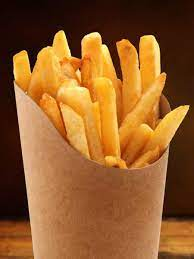

OBESITY
CHILHOOD STATISTICS
1 IN 3
cilderns and adolescents (ages 2-19)
are overweight OR OBESE
and almost NONE meet recommended healthy diet and physical activity amountAn estimated
12.5 MILLION
childerns (ages 5 years of younger),spend33 HOURS /WEEK
in CHILD CARE SETTING and consume nearly all of their daily caloriesOBESITY IS LINKED TO MORE CHRONIC CONDITIONS THAN:
smokedrinkingIncreasing the risk of more than
20 prevented diseases.
including sleep apnea.asthma,heart disease.Type 2 diabetes,osteorthritis,high bloof pressure and high cholesterol strokeRISK FACTOR
Childerns in their early teens who are childerns who are overweight from
obese and who have high triglyceride the ages of 7 to 13 may develop
levels have arteries similiar to those heart diseases are easy as age 25
45 years of o0ld
Obese childern as young as age 3 obesechildern are twice as likely
show indicator for developing heart to die before age 55 than their
diseaselater in life slimmer peers
FRENCH FRIES
are the most common vegetable that childern eat,comprising
25%
of their vegetable intake
JUICE
(which may lack important fiber found in whole fruit) makes up
40%
of childern's daily fruit intake
40% - 50% OF TODDLERS

watch more television than is recommeded.
NEARLY 1/2 OF
PRESCHOOLERS

don't get enough physcial
The cost of obesity in the united States is staggering totaling about
$147 bILLION
CHILDERNS WHO EAT HEALTHY
FOOD AND GET DAILY PHYSICAL ACTIVITY HAVE:
fewer school absences Higher academic achievement Higher self-esteem Fewer beehavioural problems